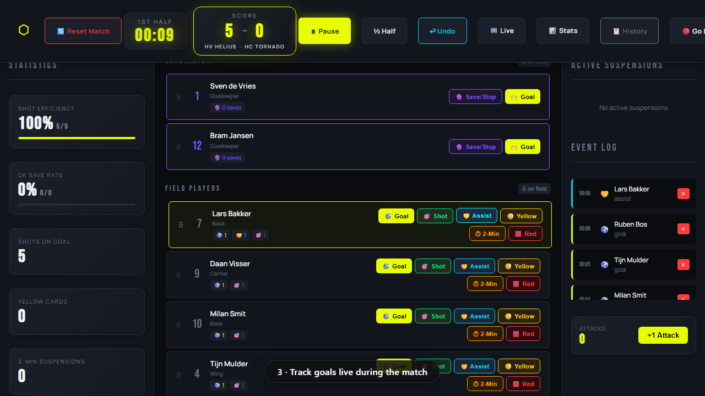
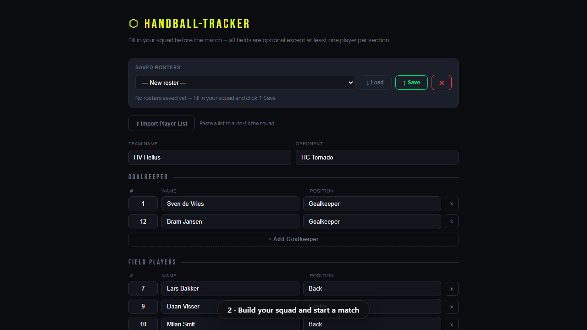
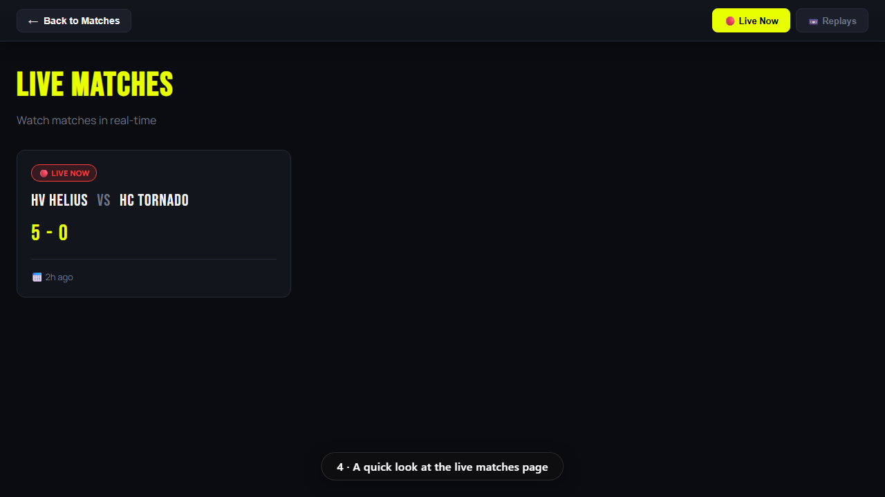
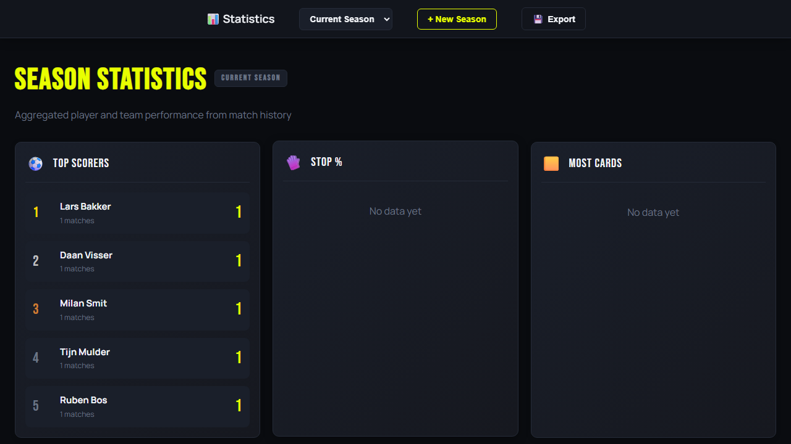

Keep the whole match. Not just the score.
Handball-Tracker records every shot, save, card and two-minute suspension as it happens, then adds your season up on its own. Built for the coach on the sideline with one hand free.
Runs in the browser on any phone, tablet or laptop. Nothing to install.
The sheet never survives the car park
You wrote it down. Goals on the back of the team list, cards in the margin, saves somewhere near the bottom. By Tuesday the paper is in a kit bag and the numbers are a guess. Next season a new coach arrives and the record starts at zero again.
Handball-Tracker keeps it. One tap per event during the match, and the season is already counted before you reach the car.
One tap per event
Every player carries their own row. Goal, shot, assist, yellow, two minutes, red. The clock runs, the event log fills, and the numbers on the left update while you are still watching the next attack.
- Goalkeepers get save and stop tracking with their own save rate
- Shot placement by goal zone, so you can see where they beat you
- Two-minute suspensions count themselves down
- Undo on every action, because the hall is loud and thumbs are wide

Your squad is already loaded
Set the roster once. Numbers, positions, goalkeepers, bench. Save it and it comes back for the next fixture, so the ten minutes before throw-off stay yours.
- Saved rosters for every team you coach
- Paste a squad list in and it imports
- Substitutions tracked between court and bench

See it run
Two minutes, no narration. Sign in, build the roster, track a few goals, go live, save the match, read the season.
For everyone who could not get there
Put the match on a link. Parents at work, players who are injured, the away supporters who did not travel: they open one page and watch the score and the event log update as you tap. No account, no app, no login wall.
- Share one link, watched on any number of screens
- Score, clock and events follow the match live
- Stop broadcasting whenever you want

The season adds itself up
Every saved match rolls into the season. Top scorers, save percentages, cards, shot efficiency. When someone asks who is actually converting, the answer is a page, not an argument.
- Separate seasons, so last year stays last year
- Full match history, every event kept
- Export to Excel when the club wants its own copy

Track your next match
Start on the trial, bring one team, see whether it survives a real Saturday. If it does, the rest of the club can follow.
Questions
Do I need an invite code?
Yes. Accounts are created with an invite code while the product is in early access. If your club already uses it, ask whoever set it up. If not, request a personal code from the sign-in screen and you will have one back shortly.
What do I run it on during a match?
A browser. Phone, tablet or laptop, whatever you already carry. A tablet gives you the biggest buttons, which matters more than you would think at 3 to 3 with four minutes left. There is nothing to install and no app store.
Can more than one person track the same match?
Your matches sync across your own devices, so you can start on a phone and finish on a tablet. Followers watching the live link see the match update but cannot change anything.
Who owns the data?
You do. Every match and season can be exported to Excel at any time, so the club keeps its own copy of its own history regardless of what happens to any subscription.
Is it only for handball?
Only handball. Two-minute suspensions, seven metre throws, goalkeeper stop percentage and attack counts are built into the way it works, not bolted onto a generic sports tracker.